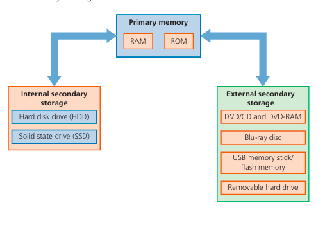
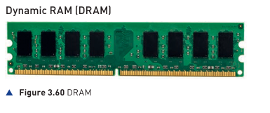
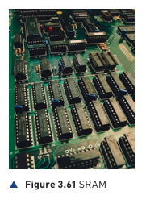

Primary memory is directly accessible by the CPU. It holds the data and instructions currently in use.

RAM (Random Access Memory)
Volatile: Contents are lost when power is removed. It stores the OS, running programs, and data in use.
- DRAM (Dynamic): Uses a transistor and a capacitor. Needs constant refreshing.

- SRAM (Static): Uses "Flip-Flops" to hold data. Faster and used for Cache.

ROM (Read Only Memory)
Non-Volatile: Contents remain when power is lost. It is permanent and cannot be altered easily.
Usage: Stores the BIOS (Basic Input/Output System) or the 'Bootstrap' which tells the computer how to start up and find the Operating System.